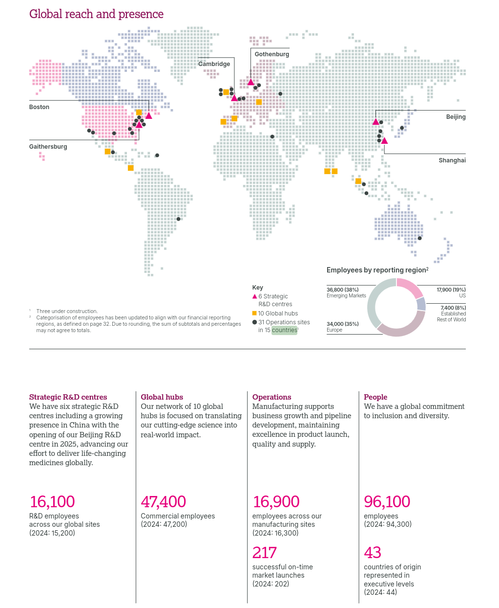

Introduction
1Introduction
AstraZeneca PLC is a global, science-led pharmaceutical company, listed in London, Stockholm and New York {AR|p. 71}, with $58,739m of Total Revenue {AR|p. 125} and 96,100 employees in 2025 {AR|p. 27}. This section presents what the company is, what it does, where it operates and how large it is, and closes with its contribution to the UN Sustainable Development Goals.
Unless stated otherwise, the data come from AstraZeneca’s Annual Report and Form 20-F Information 2025 (“the Annual Report”, abbreviated “AR” in the text) {AR}; page numbers are the ones printed on the report’s pages. AstraZeneca PLC and its subsidiaries are called “the Group”, values are in US dollars, and “$m” and “$bn” mean millions and billions. Blocks marked Analysis are interpretation by the authors, not statements from the Annual Report.
1.1Type of organisation
AstraZeneca PLC is a public limited company, limited by shares, incorporated and domiciled in England and Wales {AR|p. 199}. It was incorporated on 17 June 1992 under the Companies Act 1985, and its registered office and corporate headquarters are in Cambridge, United Kingdom {F20|Item 4.A}{AR|p. 230}. In Portuguese terms it corresponds to a listed sociedade anónima, a legal form the course material cites among private companies {INT|p. 5}.
The course material classifies organisations by who benefits from them. AstraZeneca falls under the commercial-interest type, which is usually a private firm whose main benefit goes to its owners {INT|pp. 4–5}, and under the private type when classified by who holds the capital {INT|p. 6}. It is a for-profit company: in 2025 it made a profit for the period of $10,233m and paid dividends of $4,846m {AR|p. 125}; for 2025 the Board declared a full-year dividend of $3.20 per share {AR|p. 3}, estimated at $4,963m in total {AR|p. 225}.
Its shares are listed on the London Stock Exchange, Nasdaq Stockholm and the New York Stock Exchange {AR|p. 71}. Since 2 February 2026 the ordinary shares are listed directly on the NYSE, replacing the earlier US listing of American Depositary Shares on Nasdaq {AR|p. 50}.
1.2Capital holders
On 31 December 2025 the share capital comprised 1,550,907,927 ordinary shares of $0.25 each, plus 50,000 redeemable preference shares {AR|p. 224}. The AR states that major shareholders do not have different voting rights {AR|p. 225} and describes a geographically diverse shareholder base {AR|p. 76}. Four groups held 3% or more.
| Shareholder | Shares at last disclosure | % at last disclosure | % at 31 Dec 2025 |
|---|---|---|---|
| BlackRock | 100,885,181 | 6.96 | 6.50 |
| The Capital Group Companies | 77,125,348 | 4.97 | 4.97 |
| Wellington Management Group LLP | 65,120,892 | 4.96 | 4.20 |
| Investor AB | 51,587,810 | 3.93 | 3.33 |
Table 1. Shareholders with 3% or more of the voting rights. Wellington Management Company LLP, a subsidiary, is included in the Wellington Management Group figure. Source: {AR|p. 225}.
The largest holding at 31 December 2025 is therefore 6.50%, and the Company has not been notified of any other person holding a notifiable interest.
1.3Activities and scope
AstraZeneca describes itself as a global, science-led and patient-focused pharmaceutical business, committed to excellence in the research, development, manufacturing and commercialisation of prescription medicines across primary care, specialty care and rare diseases {AR|p. 8}.
The commercial organisation is split into three regions: the US, Europe-Canada and International, which includes Australia, New Zealand and the Emerging Markets (China among them). Japan reports separately {AR|p. 32}. Products reach the market through wholly-owned local marketing companies, distributors and local representative offices {AR|p. 32}.
1.4Main products
Revenue is organised in three therapy areas. Oncology is the largest, followed by BioPharmaceuticals, which groups cardiovascular, renal and metabolism, respiratory and immunology, and vaccines and immune therapies {AR|p. 2}{AR|p. 4}. Rare Disease comes third.
Total Revenue 2025 by therapy area ($bn)
Figure 1. Total Revenue by therapy area in 2025. Percentages add to 101% because of rounding. Source: {AR|p. 2}.
The AR gives the sales of the best-selling brands. Together, the five largest products brought in $30,045m, which is 51.1% of Total Revenue (calculated from {AR|p. 56}: 30,045 ÷ 58,739). The Group counts 16 products above $1bn in annual sales {AR|p. 50}.
Five largest-selling products, 2025 ($m)
Source: {AR|p. 56}
| Area | Product | $m | Change |
|---|---|---|---|
| Oncology {AR|p. 13} | Tagrisso | 7,254 | +10% |
| Imfinzi | 6,063 | +29% | |
| Calquence | 3,518 | +12% | |
| Lynparza | 3,279 | −11% | |
| Rare Disease {AR|p. 23} | Ultomiris | 4,718 | +20% |
| Soliris | 1,837 | −29% | |
| Strensiq | 1,678 | +19% | |
| Koselugo | 662 | +5% |
Figure 2 and Table 2. Best-selling products. The AR links the fall in Soliris to patients switching to Ultomiris {AR|pp. 24, 56}.
1.5Main markets
The United States and Europe together account for 65% of Total Revenue {AR|p. 2}. The Emerging Markets are the second-largest region and the fastest growing. “Established RoW” covers Japan, Canada, Australia and New Zealand {AR|p. 33}.
Total Revenue 2025 by region ($m, growth at actual exchange rates)
Figure 3. Total Revenue by region. The shares are 43%, 26%, 22% and 9% {AR|p. 2}; the values come from {AR|p. 32}, and they add to $58,739m.
1.6Countries of presence
AstraZeneca has an active presence in more than 80 countries and sells its products in more than 125 {AR|p. 32}. Its network includes six strategic R&D centres (Boston, Gaithersburg, Cambridge, Gothenburg, Shanghai and Beijing, the latter opened in 2025), ten global hubs, and 31 operations sites in 15 countries {AR|p. 27}.

Employees by reporting region (total 96,100)
Figure 5. Employees by reporting region. Source: {AR|p. 27}.
1.7Key indicators
| Indicator (2025) | Value |
|---|---|
| Total Revenue | $58,739m (+9%) |
| Product Sales | $55,573m |
| Alliance Revenue | $3,067m |
| Collaboration Revenue | $99m |
| R&D expense | $14,232m |
| Operating profit (reported) | $13,743m |
| Profit for the period | $10,233m |
| Dividends declared and paid | $4,846m |
| Employees | 96,100 |
Total Revenue 2023–2025 ($bn)
Source: {AR|p. 11}
Table 3. Key indicators. Sources: {AR|p. 1}; {AR|p. 125}; {AR|p. 27}.
1.8Contribution to the UN Sustainable Development Goals
The AR mentions the UN SDGs once, when it says that partnerships with multilateral organisations and NGOs support them {AR|p. 76}. It does not map actions to individual goals. The mapping below is therefore Analysis by the authors: each goal is linked to the actions and targets the Group reports.
What the Group already does
| SDG | Action and evidence | Why it contributes |
|---|---|---|
| 3 | Good health and well-being. 320 million people positively impacted since 2024, 156 million of them from underserved groups. Ambition for 2030: one billion people, 400 million from underserved communities. A global tiered pricing policy with four tiers based on gross national income, and Patient Assistance Programmes. {AR|p. 41}{AR|p. 5} | The core business is to discover and supply medicines, and these programmes widen access to treatment. |
| 13 | Climate action. Scope 1 and 2 emissions are down 88.1% since 2015, against a target of 98% by 2026. Targets: −50% of Scope 3 by 2030 and −90% by 2045 (2019 baseline), and net zero by 2045. {AR|p. 2}{AR|p. 42} | It sets measurable reduction targets, verified under the Science Based Targets initiative {AR|p. 42}. |
| 6 | Clean water and sanitation. The Group's website reports a 23% reduction in water withdrawal against 2015 {NATURE}. The AR gives a 24% reduction in water use for the Operations function alone {AR|p. 33}. | It reduces the use of a shared resource in its own operations. |
| 12 | Responsible consumption and production. Waste is down 23% since 2015, with a goal of a 50% waste circularity rate by 2030 {NATURE}. The AR also gives −23% waste for Operations {AR|p. 33}. | It cuts waste at source and sets a circularity goal. |
| 15 | Life on land. AZ Forest, a reforestation and biodiversity programme: 66 million trees planted on six continents since 2020 (at the end of 2025). The website states a target of more than 100 million by 2030 and that the target was revised in 2026 {FOREST}. | It restores ecosystems and biodiversity. |
Table 4. SDGs already supported by the Group.
Additional goals supported by AR evidence
| SDG | Evidence |
|---|---|
| 5 | Gender equality. Women are 54% of the workforce, there are seven women on the Board (50%), and five of the ten members of the Senior Executive Team are women {AR|p. 39}. |
| 17 | Partnerships for the goals. More than 1,000 collaborations worldwide {AR|p. 37}, and partnerships with multilateral organisations and NGOs in support of the SDGs {AR|p. 76}. |
Table 5. Further SDGs supported by evidence in the Annual Report.
What the Group could do
The AR itself shows where the biggest gaps are. The three proposals below start from those gaps and are not actions the Group has announced.
- SDG 13: focus on suppliers. More than 95% of the Group's greenhouse-gas emissions are in the upstream and downstream value chain, and it already engages suppliers on science-based targets {AR|p. 42}. Strengthening supplier decarbonisation would act where most emissions are.
- SDG 3: close the equity gap. The ambition is to reach 400 million people from underserved communities by 2030, and 156 million had been reached since 2024 {AR|pp. 5, 41}. Concentrating access programmes on underserved groups would accelerate progress towards that target.
- SDG 6, 12 and 15: environmental impact of medicines. The AR states that pharmaceutical residues entering the environment are currently an unavoidable result of patient use of medicines, and reports measures such as environmental risk assessments {AR|p. 45}. Extending those measures along the supply chain is a possible next step.
Development
2Organisation
2.1Organisational chart
The chart below was drawn from the leadership page of AstraZeneca {LEAD}. It shows the Board of Directors, the Chief Executive Officer (CEO) and the Senior Executive Team (SET). Click on any box to see what the sources say about it.The source for each box is given in Table 6a.
-
Pascal SoriotChief Executive Officer
-
Senior Executive Team10 members
- Aradhana SarinCFO
- Oncology
- D. FredricksonEVP, Oncology Haematology Business Unit
- S. GalbraithEVP, Oncology Haematology R&D
- BioPharmaceuticals
- S. BarrEVP, BioPharma R&D
- R. DobberEVP, BioPharma BU
- Rare Disease
- M. DunoyerCEO Alexion & Chief Strategy Officer
- I. ReicEVP, International
- P. ChengEVP Global Operations, IT & CSO
- J. PottCHRO, Compliance & General Counsel
-
Senior Executive Team10 members
Figure 6. AstraZeneca organisational chart, redrawn for this report. Source: authors' elaboration, based on {LEAD}. Every box is stated in the AR {AR|pp. 67–70}, except the Board change made after it was filed {AGM26}, {MART}.
Apart from the Board change noted at the end of this paragraph, every box in Figure 6 corresponds to a fact stated in the AR: the chain Board → CEO → SET {AR|pp. 67, 70}; the ten SET members and their titles {AR|p. 70}; and the three therapy-area R&D organisations stated in the AR {AR|p. 26} — Oncology and BioPharmaceuticals confirmed further by the words of their own EVPs' AR titles {AR|p. 70}, Rare Disease confirmed instead through Alexion, which the Form 20-F describes as AstraZeneca's rare disease business {F20|Item 4.A} and which Marc Dunoyer runs as a SET member {AR|p. 70}. Iskra Reic's EVP, International, is one of the AR's three commercial regions, and the only one with a named SET member: the AR does not give the US or Europe-Canada regions a separate SET-level head {AR|pp. 32, 70}. No box groups unrelated SET members under a heading the AR does not use. The Board is shown as it stands in October 2026: Nazneen Rahman, listed in the AR, retired at the 2026 AGM {AGM26}, and Wan Ling Martello was appointed on 1 September 2026 {MART}.
2.2Analysis of the structure
The criteria below come from the course material on the organising function {ORG}. Each statement is limited to what the AR, the chart or the course material support, and each analysis ends with what cannot be concluded from the sources.
Type of departmentalisation
Departmentalisation means grouping activities into logical units to carry out the strategy {ORG|p. 14}. The course material distinguishes functional grouping {ORG|p. 15}, divisional grouping by product, area, customer or project {ORG|pp. 16–19}, multiple (mixed) grouping when large organisations cannot rely on one criterion {ORG|p. 20}, and matrix structures, which combine two criteria and have dual authority, with employees reporting to two managers {ORG|pp. 21–22}.
AstraZeneca uses several criteria at the same time:
- By therapy area (product): three R&D organisations, Oncology, BioPharmaceuticals and Rare Disease {AR|p. 26}, with a separate EVP for R&D and for the business unit in Oncology and in BioPharmaceuticals {AR|p. 70}.
- By geography: three commercial regions (US, Europe-Canada, International), with Japan reporting separately {AR|p. 32}; only International has its own named SET member, Iskra Reic {AR|p. 70}.
- By function: Operations (manufacturing and supply, IT), finance, and human resources, compliance and legal are led by separate SET members {AR|p. 70}. AstraZeneca's own careers site independently names Operations as one of its business areas, covering “the development, manufacturing, testing and delivery of our medicines” {CAREERS}.
The structure is best described as multiple (mixed) departmentalisation, combining the functional, therapy-area and geographic criteria {ORG|p. 20}.
It cannot be called a matrix. A matrix requires dual authority {ORG|pp. 21–22}, and neither the chart nor the AR documents anyone reporting to two managers: Ruud Dobber's single role as EVP, BioPharmaceuticals Business Unit covers CVRM, R&I and Vaccines & Immune Therapies together {AR|p. 70}, which is one person covering several areas, not dual reporting. The AR also says the Group has one reportable segment and that discovery, development, manufacturing and commercialisation are managed globally on a highly integrated basis {AR|p. 147}.
Capacity to adapt to change
The course material links the organising function to change management {ORG|pp. 4–5}, says that structures with few levels and delegation respond faster than those with many levels and centralisation {ORG|p. 7}, and that functional structures are rigid and hard to restructure {ORG|p. 16}.
The AR documents deliberate, long-running change:
- After acquiring Alexion in 2021, the Group launched the Post Alexion Acquisition Group Review, a global restructuring programme to integrate systems, structure and processes. It cost $232m in 2025 (of $237m of total restructuring costs) and $3,414m cumulatively {AR|p. 142}, with expected total costs of $4.0bn {AR|p. 59}.
- “Enable an agile organisation” is one of the strategic focus areas, alongside “Transform R&D ways of working” {AR|p. 11}.
- In December 2025 the Group created a dedicated Enterprise AI unit to accelerate Ambition 2030 {AR|p. 36}.
- Marc Dunoyer leads Alexion within the SET {AR|p. 70}. Before her current role, the CFO, Aradhana Sarin, was Alexion's Chief Financial Officer {SARIN21}, and Sharon Barr was Alexion's SVP, Head of Research and Product Development {BARR23} — both confirmed by AstraZeneca's own appointment announcements, not only by the AR.
The Group has shown it can absorb a large acquisition and reorganise on purpose, and it names agility as a goal. This points to a reasonable capacity to adapt.
The AR gives no decision times, so the speed of response cannot be assessed. Career moves of individual executives (for example Iskra Reic) and a “2024 reorganisation” are not in the AR, so they are not used.
Formal and informal organisation
The formal organisation is designed by management, has rules and procedures, and can be drawn in an organisational chart. The informal organisation emerges from social interaction, is not and cannot be in the chart, and can speed communication or resist change {ORG|pp. 12–13}.
Formal: the Board keeps certain matters reserved and delegates the rest to the CEO or to its five committees {AR|p. 67}; the SET is the body through which the CEO exercises delegated authority {AR|p. 70}; there is a Code of Ethics and a global compliance programme {AR|p. 34}; and cross-functional sub-committees and product committees allocate resources {AR|p. 147}. Marc Dunoyer holding two posts, CEO of Alexion and Chief Strategy Officer, is also formal, because both are official positions {AR|p. 70}.
Closest documented link to informal organisation: the Employee Resource Groups, which are voluntary, employee-led groups open to all employees {AR|p. 39}, and the Pulse survey of employees {AR|p. 39}.
No document describes the real informal organisation (networks, communities of practice, informal leaders). By definition the chart does not show it {ORG|p. 12}. The report therefore only explains the concept and the organised channels that exist.
Flexibility or rigidity
According to the course material, large organisations tend to be more specialised, centralised and formalised {ORG|p. 11}, and rigidity grows with formalisation {ORG|p. 9} and centralisation {ORG|p. 7}.
- All significant operating decisions are taken at SET level, and resources are allocated Group-wide by product committees {AR|p. 147}. This indicates centralisation at the top.
- Governance is documented in detail: reserved matters, delegations, committees and their roles {AR|pp. 67, 71}.
- Commercial presence is organised through wholly-owned local marketing companies in most markets {AR|p. 32}, and the Group states a focus on an agile organisation {AR|p. 11}.
The evidence points to a structure that is formalised and centralised at the SET, with specialisation by therapy area and region, and with agility as a declared goal. It leans towards rigidity in decision-making and towards flexibility only in the stated intention.
The AR does not describe autonomy for units below the SET, nor regional pricing autonomy. The idea that Alexion works as an “autonomous company” is not supported: the AR says the Group has a single reportable segment and that functional areas are not managed separately {AR|p. 147}.
Number of hierarchical levels
The course material relates levels to span of control: the wider the span, the fewer the levels and the flatter the structure; narrower spans give more levels and a tall structure {ORG|pp. 8–9}. It also names three management levels: strategic, tactical and operational {ORG|p. 7}.
Count in Figure 6, including the Board as level 1.
The count refers to the chart analysed, which covers only the top of the company. The AR does not disclose levels below the SET nor spans of control, so it cannot be concluded whether the whole structure is tall or flat. Other level counts found in secondary sources (6 to 9 levels) are not supported by the AR and are not used.
Line and staff positions
A line manager has decision power and authority over the workers who report to him or her, within the chain of command. A staff unit or person supports, advises or assists line managers. In the course material's example, directors of marketing, finance and production are line positions, while the board's secretariat and legal advice are staff {ORG|p. 8}.
| Position | Responsibility according to the AR | Classification |
|---|---|---|
| EVPs of R&D and business units: Fredrickson, Galbraith, Barr, Dobber | Run the R&D and commercial performance of their therapy areas {AR|p. 70} | Line |
| Iskra Reic, EVP International | Strategy and growth in the International region {AR|p. 70} | Line |
| Pam Cheng, EVP Global Operations, IT and CSO | Operations, IT and sustainability {AR|p. 70} | Mixed manufacturing is line; IT and sustainability support other areas |
| Jeff Pott, CHRO, Compliance and General Counsel | HR, compliance, legal and IP {AR|p. 70} | Staff legal advice is staff in the course example |
| Aradhana Sarin (CFO); Marc Dunoyer (Alexion, Chief Strategy Officer) | Finance; Alexion and strategy {AR|p. 70} | Not classified the AR does not say who reports to them |
Table 6. Line and staff positions in the Senior Executive Team. Classification: authors' analysis using {ORG|p. 8}.
2.3Proposed changes to the structure
The proposals below each rest on a fact stated in the AR and on the trade-offs described in the course material.
Proposal 1 · Stronger coordination between R&D and the business unit in each therapy area
Basis. In Oncology and in BioPharmaceuticals, R&D and the business unit are led by different SET members {AR|p. 70}. The AR states that cross-functional sub-committees and product committees already exist {AR|p. 147}.
Proposal. Make the coordination at therapy-area level permanent and visible, with one joint forum per area where R&D and the business unit share priorities and resources.
Advantage. Faster decisions and fewer gaps between research and commercial plans. Risk. More meetings and slower decisions if the forum has no clear authority. The course material warns that, with product-based units, each unit's interests can come before the organisation's and units may compete instead of cooperating {ORG|p. 17}; a joint forum is meant to counter that.
Proposal 2 · More local autonomy in access and pricing
Basis. Pricing pressure from payers is a main commercial concern in several regions {AR|p. 32}. Today the Group applies a global tiered pricing policy with four tiers based on gross national income {AR|p. 41}, and operating decisions are taken at SET level {AR|p. 147}.
Proposal. Give regional commercial teams more room to adapt access and pricing, within limits set centrally by the SET.
Advantage. Delegation brings decisions closer to the market and speeds the response {ORG|p. 7}, and when units are far apart it is more suitable to assign management to a manager located in the region {ORG|p. 17}. Risk. Less consistency between countries; the limits must be clear. The AR does not report how much autonomy regions have today, so this proposal needs that information to be tested.
3Planning
3.1Values, mission and vision
AstraZeneca does not use the terms “mission” and “vision”. It uses a Purpose, which plays a role similar to the mission by explaining why the organisation exists, the Ambition 2030, which corresponds to the vision and sets the intended direction, and five Values, which guide the organisational culture and decision-making {AR|pp. 8, 10}{PLAN|pp. 15–16}.
Mission
“We push the boundaries of science to deliver life-changing medicines” {AR|p. 8}. The statement is short and clear about why the company exists: to create medicines that change patients’ lives. The Group also states that it aims to create value for patients, society, the planet and shareholders {AR|p. 8}, which shows that it recognises several stakeholders and not only its shareholders. The scope is not part of the mission, but it can be completed with the business model: research, development, manufacturing and commercialisation of prescription medicines across primary care, specialty care and rare diseases {AR|p. 8}.
Vision
To be pioneers in science, lead in its disease areas and transform patient outcomes, with concrete targets for 2030: at least 20 new medicines and $80bn in Total Revenue {AR|p. 10}. The numerical targets make the vision measurable and allow progress to be monitored. These targets are used as the strategic objective in Section 3.2. The overall vision is then broken down into ambitions for each therapy area:
- in Oncology, “eliminate cancer as a cause of death” {AR|p. 14};
- in BioPharmaceuticals, “transform care for billions of people living with chronic diseases” {AR|p. 16};
- in Rare Disease, “pioneering new possibilities”, focusing on diseases with significant unmet medical need where scientific progress has been absent or limited {AR|p. 22}.
Each unit therefore receives its own direction, aligned with the Group’s vision.
Values
| Value | Meaning |
|---|---|
| We follow the science | Push the boundaries of science and work creatively with partners |
| We put patients first | Understand patients’ needs and consider them in every decision |
| We play to win | Build high-performing, inclusive and diverse teams and make the right choices to win |
| We do the right thing | Apply high ethical standards in all aspects of the business |
| We are entrepreneurial | Act with urgency, bravery and resilience, taking smart risks |
Table 7. AstraZeneca’s values. Source: {AR|p. 8}.
The focus on science and patients is directly linked to the research and development of medicines, while integrity and entrepreneurship support responsible conduct and the search for new opportunities. The values guide the company’s culture and decisions and are measured in the internal Pulse survey: 88% of employees see the company as patient-oriented {AR|p. 38}. Measuring them is a form of control, because it allows the company to check whether the culture matches what is intended.
Mission, vision and values are consistent with each other and share the same central idea: science in the service of the patient. The main challenge for management is to reconcile play to win with put patients first, that is, to balance the profitability required by shareholders with patients’ access to medicines, in a context of pressure on prices {AR|pp. 32–33}.
3.2Objectives at the three management levels
Strategic objectives set the overall long-term results, tactical objectives translate the strategy into departmental plans, and operational objectives guide concrete day-to-day activities {PLAN|pp. 5–9}. AstraZeneca discloses only its strategic objectives. The tactical and operational objectives below are proposed here, not disclosed by the company, designed so that each one contributes to the level above. The Ambition 2030 is pursued through the Growth Through Innovation strategy, which has three priorities: Science and Innovation, Growth and Therapy Area Leadership, and People and Sustainability {AR|p. 10}. The tactical objective below falls under the second priority and the operational objective supports the first.
| Level | Objective | Horizon |
|---|---|---|
| Strategic CEO and SET | Launch at least 20 new medicines and reach $80bn in Total Revenue by 2030 {AR|p. 10} | Long |
| Tactical Head of oncology clinical development | Submit at least three new oncology medicines for regulatory approval by the end of 2027 | Medium |
| Operational Team leader of a clinical trial | Review at least 98% of the trial’s documents within the deadline, with no critical findings, by the end of the next quarter | Short |
Table 8. One objective for each management level. Only the strategic objective is declared by the Group.
Strategic. It covers the whole company, has a long horizon and requires decisions only top management can take, such as investment in R&D, which areas to prioritise and acquisitions.
Tactical. It turns the strategic target into a result for one specific unit, Oncology, which is the largest area (44% of revenue) {AR|p. 2} and had 10 positive Phase III readouts in 2025 {AR|p. 13}. It belongs to a middle manager, who coordinates teams but does not set the Group’s strategy.
Operational. It focuses on a concrete task, has a short horizon and a precise indicator. The quality of documentation is essential for regulatory approval, and the Group already reports zero critical observations in 42 external inspections {AR|p. 4}.
The three objectives are SMART and form a cascade. Reliable documentation (operational) enables regulatory submissions (tactical), and approved submissions become new medicines and revenue (strategic).
3.3SWOT analysis and strategy
The SWOT is built by looking outside the company first and then inside it, following the course material {PLAN|pp. 17–29}. Outside, PESTEL covers the wider environment {PLAN|pp. 19–21} and Porter's five forces cover the pharmaceutical sector {PLAN|pp. 21–24}. Inside, the value chain shows what the company does {PLAN|p. 25} and VRIO shows which resources give it an edge {PLAN|p. 26}. Strengths and weaknesses describe the company today; opportunities and threats describe what is coming {PLAN|p. 27}. The facts come from the Annual Report and other cited sources, while ratings and classifications are an assessment, not company statements.
Figure 7. From the environment to the strategy. Diagram following the method in the course material {PLAN|pp. 17–29}.
The wider environment: PESTEL
The picture outside AstraZeneca is mixed. Demand is on the company's side: people live longer, chronic diseases and cancer keep growing, and health spending keeps rising. Price and regulation work against it: health budgets are tight, the US now negotiates prices, and governments want to limit patent protection. The course material asks us to rate the impact of each factor and to look at how factors interact {PLAN|p. 19}; Figure 8 sums this up.
PPolitical
- US–China rivalry and tariffs ●●●Economic nationalism and trade controls may raise costs or cut revenue {AR|pp. 6, 49}.
- Rewards for producing locally ●●●Three-year tariff exemption in the US and a $50bn US investment plan {AR|pp. 4, 7, 32–33}.
- Taxation ●●●$2,845m of income tax paid; tax rate of 18%, 18–22% expected in 2026 {AR|pp. 59, 64}.
EEconomic
- Tight health budgets ●●●Downward pressure on prices and consolidated payers {AR|pp. 7, 32}.
- A growing market ●●●Health spending +7.1% a year to 2029; pharma sales +10% in 2025 {AR|pp. 6–7}.
- Shift to emerging markets ●●●China, India and Indonesia gain economic weight {AR|p. 6}.
- Rates, currency and capital ●●●$4,875m of undrawn credit lines; currency should help 2026 revenue slightly {AR|pp. 49, 61, 64}.
SSocial
- Ageing population ●●●People aged 65+ will triple by 2100 {AR|pp. 6–7}.
- Rising disease burden ●●●1.4 billion people with hypertension; over 30 million new cancer diagnoses expected by 2040 {AR|pp. 7, 13, 17}.
- Talent ●●●5,100 internal promotions in 2025 {AR|p. 39}.
TTechnological
- Artificial intelligence ●●●Worth $4–7bn a year to pharma, with new risks {AR|p. 7}.
- Access to new science ●●●Over 100 Phase III studies and 1,000+ collaborations {AR|pp. 3, 37}.
EEnvironmental
- Climate ●●●Extreme weather threatens sites and suppliers; net zero target by 2045 {AR|pp. 7, 42, 44}.
- Water, waste and nature ●●●Active ingredients are the main water-pollution impact {AR|pp. 33, 45}.
LLegal
- US price negotiation (IRA) ●●●Farxiga in 2026, Calquence in 2027. The AR calls the impact “manageable”; it is rated high here, because Farxiga is the largest product {AR|pp. 33, 56}.
- Limits on patents ●●●Governments and payers push to limit IP protection {AR|p. 49}.
- EU pharma reform ●●●8 years of data protection + 1 of market protection; generics on “day one” {EU}.
- Approvals and data rules ●●●Approval delays can postpone launches; more rules on data and AI {AR|p. 48}.
Figure 8. PESTEL at a glance; Table 9 has the evidence for each factor. Impact ratings are not given in the Annual Report.
| Factor | Evidence | Class | Impact |
|---|---|---|---|
| PPolitical | |||
| Geopolitics | Tension and strategic rivalry between the US and China, and rising economic nationalism {AR|p. 6}. Trade controls, tariffs and taxes may raise costs or reduce revenue {AR|p. 49}. | Threat | High |
| Localisation and tariffs | Governments encourage companies to localise operations to reduce supply-chain risk {AR|p. 7}. The Group obtained a three-year exemption from Section 232 tariffs and plans to invest $50bn in US manufacturing and R&D {AR|pp. 4, 32–33}. | Opportunity | Medium |
| Taxation | The Group paid $2,845m of income tax in 2025. The Core tax rate was 18% and is guided to 18–22% in 2026 {AR|pp. 59, 64}. | Neutral | Low |
| EEconomic | |||
| Budgets and pricing | Healthcare budgets are under pressure, leading to downward pressure on pricing {AR|p. 7}. Payer consolidation and restrictive reimbursement drive significant pricing pressure {AR|p. 32}. | Threat | High |
| Market growth | Global healthcare spending is expected to grow 7.1% a year in 2025–2029, and global pharmaceutical sales grew 10.0% in 2025 {AR|p. 6}. Global GDP growth is forecast at 3.3% in 2026 and 3.2% in 2027 {AR|p. 7}. | Opportunity | High |
| Shift to emerging markets | Economic power is shifting from the G7 to large emerging markets such as China, India and Indonesia {AR|p. 6}. | Opportunity | Medium |
| Interest rates and capital | Borrowing under committed facilities is priced on SOFR plus a margin, and treasury manages interest-rate, currency and credit risk {AR|pp. 61, 64}. The Group holds $4,875m of undrawn committed facilities with no covenants {AR|p. 61}. | Neutral | Low |
| Currency | Significant changes in exchange rates may adversely affect the business {AR|p. 49}. At January 2026 rates, 2026 Total Revenue would gain a low single-digit percentage {AR|p. 64}. | Neutral | Low |
| SSocial | |||
| Ageing | The population aged 65 and over is set to triple by 2100, which raises demand for care {AR|pp. 6–7}. | Opportunity | High |
| Disease burden | Non-communicable diseases are 75% of non-pandemic deaths. About 1.4 billion people have hypertension, over 30 million new cancer diagnoses are estimated by 2040, and fewer than 10% of rare diseases have an approved treatment {AR|pp. 7, 13, 17, 23}. | Opportunity | High |
| Talent | The Group builds talent internally: 5,100 promotions and 2,760 external hires in its global hubs in 2025 {AR|p. 39}. | Neutral | Low |
| TTechnological | |||
| Artificial intelligence | Generative AI is estimated to create $4–7bn of value a year for pharma, and the AR notes that AI “will unlock value and bring new risks” {AR|p. 7}. | Opportunity with risk | Medium |
| R&D capacity and collaboration | R&D expense was $14,232m and more than 100 Phase III studies are ongoing {AR|pp. 3, 55}. More than 1,000 collaborations give access to technology {AR|p. 37}. | Opportunity | Medium |
| EEnvironmental | |||
| Climate | The climate crisis worsens health inequities and strains health systems {AR|p. 7}. The Group has its own science-based targets, including net zero by 2045 {AR|p. 42}. Extreme weather threatens sites, suppliers and distribution routes {AR|p. 44}. | Threat | Medium |
| Water, waste and nature | Operations cut water use by 24% and waste by 23% against 2015 {AR|p. 33}. The Group recognises the active ingredients in its products as its most material water-pollution impact {AR|p. 45}. | Threat | Low |
| LLegal | |||
| Price regulation (IRA) | In the US, the Inflation Reduction Act subjects medicines to Medicare-negotiated prices. Farxiga was selected and Calquence takes effect in 2027. The AR expects the impact on Farxiga to be manageable {AR|p. 33}; it is rated high here, because Farxiga is the largest product at $8,492m, 14.5% of Total Revenue {AR|p. 56}. | Threat | High |
| Intellectual property | Governments and payers press to limit intellectual-property protection {AR|p. 49}. | Threat | High |
| EU pharmaceutical reform | The December 2025 provisional agreement sets eight years of data protection plus one year of market protection (extendable by one year if two of three conditions are met), and a Bolar exemption so that generics can be available on day one after intellectual-property expiry {EU}. | Threat | Medium |
| Sector regulation | Delays in regulatory approvals could delay marketing and reduce revenue {AR|p. 48}. Products need approval from authorities such as the FDA and the EMA {AR|p. 20}. | Threat | Medium |
| Data and AI rules | A growing range of legislative and regulatory requirements covers data and AI {AR|p. 48}. | Threat | Low |
Table 9. PESTEL analysis. Inflation, education levels and government stability are left out because the Annual Report does not treat them as business factors.
The sector: Porter's five forces
This section looks at the market for innovative prescription medicines. Each force is rated strong, moderate or weak {PLAN|p. 21}, using the factors that the course material lists for each one {PLAN|pp. 22–24}.
New entrants Weak
- 5–15 years of R&D plus regulatory approval {AR|p. 9}
- Big players buy promising biotechs, e.g. EsoBiotec {AR|pp. 37, 48}
- Weak only while patents hold {AR|p. 49}
Suppliers Moderate
- Most API manufacturing is outsourced {AR|p. 33}
- Dual sourcing and safety stocks {AR|p. 48}
Rivalry
- High fixed costs: $14.2bn of R&D a year {AR|p. 55}
- 100+ Phase III studies running {AR|p. 3}
- A growing market eases the pressure {AR|p. 6}
Buyers Strong
- Consolidated payers and rebates {AR|p. 32}
- Medicare price negotiation {AR|p. 33}
- Doctors prescribe, but others pay {AR|p. 32}
Substitutes Strong over time
- Symbicort eroding in the EU and Japan {AR|p. 20}
- $90bn+ of sector sales lose exclusivity in 2025–2029 {IQVIA}
Figure 9. The five forces in the innovative pharmaceutical sector, with one key figure per force. Ratings are not given in the Annual Report.
| Force | Evidence | Intensity |
|---|---|---|
| Rivalry | Number and balance: several large groups of similar size. In 2024 the top 10 earned between $44.47bn (Sanofi) and $64.17bn (Merck & Co.), and AstraZeneca was 5th with $54.07bn, behind Merck & Co., Pfizer, J&J and AbbVie {P50}. Fixed costs: R&D of $14,232m a year {AR|p. 55} and a manufacturing network of 31 sites {AR|p. 33}. Differentiation: products protected by patents and leading positions until exclusivity ends {AR|pp. 9, 56}. Growth: the sector is growing, with spending up 7.1% a year to 2029 and sales up 10.0% in 2025 {AR|p. 6}, which eases rivalry. More than 100 Phase III studies are ongoing {AR|p. 3}. | Strong |
| New entrants | Capital and time: developing a medicine is estimated at $2.6bn (in 2013 dollars) {MULLARD}, and R&D takes 5–15 years and needs regulatory approval {AR|p. 9}. Scale: sales in more than 125 countries with 47,400 commercial employees {AR|p. 32}, and more than 1,000 collaborations {AR|p. 37}. Biotechs: the Group strengthens its pipeline through acquisitions, licensing and collaborations {AR|p. 48}, for example EsoBiotec {AR|p. 37}. Condition: the AR warns that limits on intellectual-property protection would lead to “accelerated and intensified competition” {AR|p. 49}. Exit barriers: the Group operates specialised manufacturing sites, and the AR records the closure of one tablet plant (Bangalore, May 2025) {AR|p. 33}. | Weak (conditional on IP) |
| Suppliers | Concentration: most API manufacturing is externally sourced, complemented by growing internal capability {AR|p. 33}. India accounts for 48% of active API Drug Master Files filed with the US FDA and China for 18% in 2024; the files reflect manufacturer location, not volume {USP}. Substitutes: some inputs have no easy alternative, such as horseshoe-crab blood reagents until a synthetic alternative was adopted in 2025 {AR|p. 45}. Mitigation: dual sourcing, multiple suppliers and stock monitoring {AR|p. 48}. | Moderate |
| Buyers | Concentration: payers are mainly insurers and national budgets. Payer consolidation and restrictive reimbursement drive significant pricing pressure, and rebates apply {AR|p. 32}. In the US, three pharmacy benefit managers (CVS Caremark, Express Scripts and Optum Rx) processed about 80% of equivalent prescription claims in 2025 {FEIN}. Prices are negotiated under the IRA {AR|p. 33} and follow a four-tier policy based on national income {AR|p. 41}. Products are prescribed by physicians, who do not pay for them {AR|p. 32}. Pricing pressure is a Principal Risk {AR|p. 48}. | Strong |
| Substitutes | Cost: when exclusivity ends, generics enter at lower prices. Brilinta sales fell 38% to $823m after generic entry in the US and Europe {AR|pp. 18, 56}, and Symbicort eroded in the EU and Japan {AR|p. 20}. Farxiga still grew 10% in 2025 despite generic competition in some markets {AR|p. 56}. IQVIA estimates more than $90bn in sales set to lose exclusivity in 2025–2029 {IQVIA}. Generics are treated here as substitutes, because they replace the branded product with the same active ingredient at a lower price {PLAN|p. 24}. | Strong over time, by product |
Table 10. Porter's five forces. Intensity is not rated in the Annual Report.
Inside the company: value chain
The value chain splits what AstraZeneca does into primary activities, which make and deliver the medicines, and support activities, which make the rest possible. The course material also links these activities to the cost structure and profit {PLAN|p. 25}, and asks what the company does well and less well, including its people and culture {PLAN|p. 26}.
Figure 10. AstraZeneca's value chain: one key figure per activity and, in red, its weak point. Ratings are not given in the Annual Report.
Where each dollar of revenue goes (2025, % of Total Revenue)
Figure 11. Cost structure and margin, calculated from the income statement {AR|p. 125}. Gross margin is 81.9%.
| Activity | Evidence | Weak points | Rating |
|---|---|---|---|
| Primary activities | |||
| Inbound logistics | Most API manufacturing is externally sourced, complemented by growing internal capability, and a supply chain finance programme supports external suppliers {AR|p. 33}. | Drug shortages reached record levels in 2025 {AR|p. 33}; failure to maintain supply is a Principal Risk {AR|p. 48}. | Neutral / risk |
| Operations | 31 operations sites in 15 countries (excluding clinical supply sites) and more than 99% supply performance {AR|pp. 4, 33}. 63 health-authority GMP and GDP inspections with zero critical findings {AR|p. 31}. The CEO review cites zero patient-level recalls and zero critical observations in 42 external inspections {AR|p. 4}. | 10 product recalls {AR|p. 31}. The AR does not reconcile the 42 and 63 inspection counts. | Strength |
| Outbound logistics | Distribution expense was $579m, 1.0% of revenue (calculated) {AR|p. 125}. 217 on-time market launches are reported under Operations {AR|pp. 27, 33}. | The AR gives no delivery-performance data. | Neutral |
| Marketing and sales | 47,400 commercial employees {AR|p. 27}; 16 medicines above $1bn {AR|p. 4}; sales through wholly-owned marketing companies, distributors and local offices {AR|p. 32}. | Five products are 51% of revenue (calculated: $30,045m ÷ $58,739m) and Farxiga alone is 14.5% {AR|p. 56}. The US is 43% of revenue, with price pressure {AR|pp. 2, 32}. | Strength with concentration risk |
| After-sales | Pharmacovigilance across the product life cycle {AR|p. 31}; patient assistance programmes {AR|p. 41}; more than 200 partnerships with health systems in 50 countries {AR|p. 4}. | 10 product recalls {AR|p. 31}. | Strength |
| Support activities | |||
| R&D and technology | R&D expense of $14,232m, 24.2% of revenue (calculated) {AR|pp. 28, 125}; 197 pipeline projects {AR|p. 30}; over 90% of small-molecule discovery AI-enabled {AR|p. 36}. | 20 projects discontinued in 2025, 11 for safety or efficacy {AR|p. 30}; Fasenra's Phase III COPD trial missed its primary endpoint {AR|p. 20}. | Strength |
| Human resources and culture | 86% say AstraZeneca is a great place to work (Pulse survey) {AR|pp. 5, 38}; 89% report learning or development {AR|p. 39}; over 50,000 employees took part in the AI programme {AR|pp. 5, 39}. The Group's five values are in {AR|p. 8}. | 4,441 Code of Ethics breaches recorded and 434 people removed from role {AR|p. 34}. Turnover is not reported. | Strength |
| Financial management | Operating cash flow of $14,575m (+23%) {AR|p. 10}. Capital priorities: invest in the business and pipeline, keep an investment-grade rating, pursue business development, and pay a progressive dividend {AR|p. 10}. | Net debt of $23,374m, 1.6 times operating cash flow (calculated) {AR|p. 61}. | Strength, leverage to monitor |
| Physical resources | A $4.5bn plant in Virginia and a $2bn expansion in Maryland {AR|pp. 4, 33}. Scope 1 and 2 emissions are 88.1% below 2015 {AR|p. 42}. | Against a target of −98% by 2026 {AR|p. 42}. The Bangalore tablet plant closed in May 2025 {AR|p. 33}. | Strength |
| Procurement | Dual sourcing, multiple suppliers and stock monitoring {AR|p. 48}. | The AR describes mitigation, not performance. | Neutral |
| Administration and risk | Each SET function assesses risk quarterly, feeding the Group Risk Report for the Board, the Audit Committee and the SET {AR|p. 47}. The PAAGR restructuring programme has realised annual run-rate pre-tax benefits of $1.9bn {AR|p. 59}. | All significant operating decisions are taken at SET level {AR|p. 147} | Neutral / risk |
| Margin | |||
| Cost structure and margin | 2025, % of Total Revenue (calculated from {AR|p. 125}): cost of sales 18.1%, distribution 1.0%, R&D 24.2%, selling, general and administrative 33.9%. Gross margin 81.9% and operating margin 23.4%. | — | Strength |
Table 11. Value chain analysis. Ratings are not given in the Annual Report.
Which resources give an edge: VRIO
VRIO asks four questions about each resource: does it create value, is it rare in the sector, is it hard or costly to copy, and is the company organised to use it? Only a resource that passes all four counts as a competitive advantage {PLAN|p. 26}. Because the Annual Report does not compare AstraZeneca with its rivals, the answers below are an assessment, not a company statement.
| Resource | Why | V | R | I | O | Result |
|---|---|---|---|---|---|---|
| Pipeline and R&D | 197 projects; 20 new medicines in late stages or under review; 43 major approvals in 2025 in the US, EU, China and Japan {AR|pp. 28, 30} | Y | Y | Y | Y | Competitive advantage |
| Leadership in oncology | $25.6bn (+15%) and five medicines above $1bn; the leadership claims are the Group's own {AR|pp. 4, 12–14} | Y | Y | Y | Y | Competitive advantage |
| Patents on current products | The law blocks copies while they last; Farxiga loses US exclusivity in 2026 {AR|pp. 9, 33} | Y | Y | Y | Y | Advantage until expiry |
| Operational excellence | >99% supply performance and 217 on-time launches {AR|pp. 4, 27} | Y | Y | N | Y | No: can be copied |
| Global presence | Sales in over 125 countries; Emerging Markets are 26% of revenue {AR|pp. 2, 32–33} | Y | N | N | Y | No: rivals have it too |
| AI and data | 90%+ of small-molecule discovery uses AI; Enterprise AI unit created in December 2025; scaling AI is listed as a Principal Risk {AR|pp. 36, 48} | Y | N | N | Y | No: available to the whole sector |
| Partnership network | More than 1,000 collaborations worldwide {AR|p. 37} | Y | N | N | Y | No: rivals have it too |
Table 12. VRIO analysis: Value, Rarity, Imitability, Organisation. The result follows the course rule {PLAN|p. 26}.
Putting it together: the SWOT
The SWOT gathers the most important points from the four tools. From the PESTEL, the factors with high or medium impact are kept; from the other tools, the points that matter most or that come up more than once. Under each point, a grey label shows which tool it came from, so the origin of the information is always visible. Strengths whose label is marked parity passed the value test but failed the rarity or the imitability test of the VRIO: they are needed to compete, but they do not set the company apart.
| Helpful | Harmful |
|---|---|
Strengthsinside the company · today
|
Weaknessesinside the company · today
|
Opportunitiesoutside the company · future
|
Threatsoutside the company · future
|
Table 13. SWOT matrix of AstraZeneca, with the source tool of each point.
What matters most
Not all 27 points weigh the same. They are ranked by their weight in revenue, how soon they hit, whether the Annual Report treats them as a priority or Principal Risk, and whether they can be measured.
Inside the company
Outside the company
Crossing the factors
The course material suggests four questions to link the inside with the outside {PLAN|pp. 27–28}. Each cell answers one of them.
Figure 12. The four crossings; they are not given in the Annual Report.
Proposed strategy
The course material asks for several alternatives to be weighed before one is chosen {PLAN|pp. 3, 7, 29}. It does not offer a list of generic strategies, and the Annual Report does not reject any option, so the three levers the report itself describes are compared below.
Organic growth through R&D
New medicines and new uses of existing ones; 12 first life-cycle approvals in 2025 {AR|pp. 4, 52}. Answers S1, S2 → O1, O5, O7, T2.Acquisitions, licences and partnerships
For example EsoBiotec, up to $1bn {AR|pp. 37, 48}. Answers T2, W1, W3.Paying shareholders
Progressive dividend of $3.20 a share {AR|pp. 3, 10}. Important, but it does not fix any weakness or threat.Figure 13. Alternatives considered.
The proposed strategy is growth through innovation, with faster renewal of the portfolio, better geographic balance and secure supply. It draws on all four crossings in five actions. The growth itself rests on S1 and S2, the two resources the VRIO confirms as advantages that do not expire; S3, S4 and S6 are conditions for carrying the strategy out, not sources of advantage in themselves.
Figure 14. How the five actions lead to the Ambition 2030. The 2030 targets are the Group’s {AR|p. 10}.
Two weaknesses stay without a dedicated action: US reliance (W2) and pipeline setbacks (W6), which are treated here as risks to watch. Rivalry and patent rules (T4, T5) are outside the company's control, and the strategy answers them indirectly by renewing the portfolio.
How does this compare with what AstraZeneca already says? Its declared strategy, Growth Through Innovation, has three priorities {AR|pp. 2, 10, 11}, and the Annual Report lists similar mitigations for its main risks {AR|p. 48}. Actions 1, 2 and 5 stay close to that strategy. Actions 3 and 4 depart from it: Action 3 puts more weight on emerging markets than the company does, and Action 4 proposes delegating pricing decisions that are taken centrally today. What this adds is the explicit path from the SWOT to the crossings to action, and the choice between levers.
| Goal | Indicator | Today | Declared target |
|---|---|---|---|
| Renew the portfolio | New medicines approved since Oct 2022 | 9 | ≥ 20 by 2030 {AR|p. 10} |
| Grow | Total Revenue | $58.7bn (2025) | $80bn by 2030 {AR|p. 10} |
| R&D productivity | Regulatory events per year | 97 (2025) | 2025 target 54, with 69 counted; 2026 not disclosed {AR|pp. 91, 102} |
| R&D productivity | Pipeline progression events | 38 (2025) | 2025 target 29, with 36 counted {AR|pp. 11, 91} |
| Financial capacity | Cash flow (Group scorecard measure) | $11.9bn (2025) | 2025 target $11.3bn {AR|p. 91} |
| Sustainability | Scope 1 and 2 emissions vs 2015 | −88.1% | −98% by 2026 {AR|p. 42} |
| Sustainability | Scope 3 emissions vs 2019 | — | −50% by 2030, −90% by 2045; net zero by 2045 {AR|p. 42} |
Table 14. Indicators to follow the strategy. Targets are declared by the Group; the choice of indicators is not. The Annual Report sets no target for revenue concentration or for the slow-growth areas. The scorecard cash-flow measure is operating cash flow less capital expenditure, plus proceeds from disposals of intangible assets {AR|p. 91}, which is why it is lower than the $14.6bn in S5.